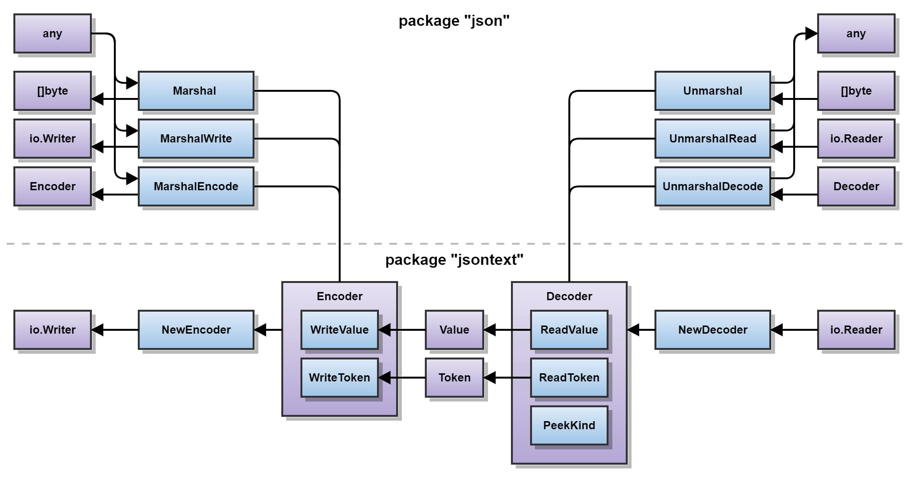

API JSON mới cho Go
Bản dịch tiếng Việt của bài A new Go API for JSON trên The Go Blog (4 tháng 11, 2026). Nội dung văn bản gốc thuộc giấy phép Creative Commons Attribution 4.0 International (CC BY 4.0); mã nguồn minh họa thuộc giấy phép BSD (xem go.dev/copyright và footer trang Go). Bản dịch ghi công các tác giả gốc và liên kết về bài gốc; chỉ nhằm chia sẻ kỹ thuật.
TL;DR
- Go 1.27 đưa
encoding/json/v2vàencoding/json/jsontextvào trạng thái ổn định, dùng được rộng rãi — sau giai nghiệm (GOEXPERIMENT=jsonv2) từ Go 1.25. jsontexttách lớp cú pháp (encode/decode token & value, streaming thật);json/v2lo ngữ nghĩa (marshal/unmarshal) và nhậnOptionsnhư tham số hạng nhất.- Mặc định an toàn hơn: từ chối UTF-8 không hợp lệ, từ chối tên trùng trong object, nil slice/map →
[]/{}, khớp tên field phân biệt hoa thường,omitemptytheo “JSON rỗng”. Unmarshalcủa v2 nhanh hơn rõ (benchmark lên tới ~10×); migrate dần nhờ options tương thích v1/v2; dưới hood v1 được triển khai trên v2.
Giới thiệu
JavaScript Object Notation (JSON) là định dạng trao đổi dữ liệu đơn giản, định dạng dữ liệu phổ biến nhất trên internet, và được các chương trình Go đọc/ghi rộng rãi. Go đã có hỗ trợ JSON trong thư viện chuẩn từ lâu trước Go 1.0. Chúng tôi lần đầu viết về hỗ trợ JSON trong Go hơn 15 năm trước!
Theo thời gian, các package tiến hóa theo nhu cầu người dùng, và encoding/json cũng không ngoại lệ. Năm ngoái, chúng tôi đã viết về một API thực nghiệm mới cho JSON, nhằm mang lại các cải tiến và sửa lỗi đã chờ đợi lâu.
Sau thêm phản hồi và tinh chỉnh, các package mới encoding/json/v2 và encoding/json/jsontext đã ổn định và sẵn sàng dùng rộng rãi trong Go 1.27! Bài này là phiên bản cập nhật của bài giới thiệu thí nghiệm, mô tả các vấn đề của encoding/json, và giới thiệu các package mới.
Vấn đề với encoding/json
Nhìn chung, encoding/json đã đứng vững tốt. Ý tưởng marshal và unmarshal các kiểu Go tùy ý với một biểu diễn JSON mặc định, kết hợp khả năng tùy biến biểu diễn, đã chứng tỏ rất linh hoạt. Tuy nhiên, qua nhiều năm kể từ khi ra mắt, nhiều người dùng đã chỉ ra nhiều hạn chế.
Lỗi hành vi
Có nhiều lỗi hành vi trong encoding/json:
- Xử lý cú pháp JSON thiếu chính xác: Qua thời gian, JSON được chuẩn hóa mạnh hơn để các chương trình giao tiếp đúng. Nói chung, decoder ngày càng nghiêm khi từ chối đầu vào mơ hồ, nhằm giảm khả năng hai triển khai hiểu khác nhau (nhưng vẫn “thành công”) về cùng một giá trị JSON.
encoding/jsonhiện chấp nhận UTF-8 không hợp lệ, trong khi Internet Standard mới nhất (RFC 8259) yêu cầu UTF-8 hợp lệ. Hành vi mặc định nên báo lỗi khi gặp UTF-8 không hợp lệ, thay vì âm thầm làm hỏng dữ liệu — điều có thể gây vấn đề ở tầng sau.encoding/jsonhiện chấp nhận object có tên member trùng. RFC 8259 không quy định cách xử lý tên trùng, nên triển khai được tự do chọn giá trị tùy ý, gộp giá trị, bỏ giá trị, hoặc báo lỗi. Sự hiện diện của tên trùng tạo ra một giá trị JSON không có nghĩa được thống nhất toàn cầu. Điều này có thể bị khai thác trong ứng dụng bảo mật và đã từng bị khai thác (như CVE-2017-12635). Hành vi mặc định nên nghiêng về an toàn và từ chối tên trùng.- Lộ tính nil của slice và map: JSON thường dùng để giao tiếp với chương trình dùng triển khai JSON không cho phép
nullđược unmarshal vào kiểu dữ liệu kỳ vọng là mảng hoặc object JSON. Vìencoding/jsonmarshal slice hoặc map nil thành JSONnull, điều này có thể gây lỗi khi phía kia unmarshal. Một khảo sát cho thấy hầu hết người dùng Go thích mặc định marshal slice/map nil thành mảng hoặc object JSON rỗng. - Unmarshal không phân biệt hoa thường: Khi unmarshal, tên member object JSON được ánh xạ tới tên field struct Go bằng khớp không phân biệt hoa thường. Đây là mặc định gây ngạc nhiên, tiềm ẩn rủi ro bảo mật, và hạn chế hiệu năng.
- Gọi method không nhất quán: Do chi tiết triển khai, các method
MarshalJSONkhai báo trên pointer receiver đượcencoding/jsongọi không nhất quán. Dù được coi là bug, không thể sửa vì quá nhiều ứng dụng phụ thuộc hành vi hiện tại.
Thiếu sót API
API của encoding/json có thể khó dùng hoặc hạn chế:
- Khó unmarshal đúng từ một
io.Reader. Người dùng thường viếtjson.NewDecoder(r).Decode(v), cách này không từ chối rác trailing ở cuối input. - Có thể đặt option trên kiểu
EncodervàDecoder, nhưng không dùng được với hàmMarshalvàUnmarshal. Tương tự, kiểu triển khai interfaceMarshalervàUnmarshalerkhông dùng được các option, và không có cách “luồn” option xuống call stack. Ví dụ, optionDecoder.DisallowUnknownFieldsmất hiệu lực khi gọi methodUnmarshalJSONtùy chỉnh. - Các hàm
Compact,Indent, vàHTMLEscapeghi vàobytes.Bufferthay vì thứ linh hoạt hơn như[]bytehoặcio.Writer. Điều này hạn chế khả năng dùng các hàm đó.
Hạn chế hiệu năng
Gạt sang một bên chi tiết triển khai nội bộ, API công khai buộc package vào một số hạn chế hiệu năng:
- MarshalJSON: Method interface
MarshalJSONbuộc triển khai phải cấp phát[]bytetrả về. Ngoài ra, ngữ nghĩa yêu cầuencoding/jsonkiểm tra kết quả là JSON hợp lệ và định dạng lại cho khớp indentation đã chỉ định. - UnmarshalJSON: Method interface
UnmarshalJSONyêu cầu cung cấp một giá trị JSON đầy đủ (không có dữ liệu trailing). Điều này buộcencoding/jsonparse toàn bộ giá trị JSON cần unmarshal để xác định nơi nó kết thúc trước khi gọiUnmarshalJSON. Sau đó, chính methodUnmarshalJSONlại phải parse lại JSON đã cung cấp. - Thiếu streaming: Dù kiểu
EncodervàDecoderthao tác trênio.Writerhoặcio.Reader, chúng vẫn buffer toàn bộ giá trị JSON trong bộ nhớ. MethodDecoder.Tokenđể đọc từng token tốn nhiều cấp phát và không có API tương ứng để ghi token.
Hơn nữa, nếu triển khai của MarshalJSON hoặc UnmarshalJSON đệ quy gọi hàm Marshal hoặc Unmarshal, hiệu năng trở thành bậc hai (quadratic).
Cố sửa encoding/json trực tiếp
Giới thiệu một major version mới, không tương thích của một package là quyết định nặng. Nếu có thể, chúng ta nên cố sửa package hiện có.
Dễ tương đối khi thêm tính năng mới, nhưng khó thay đổi tính năng hiện có. Đáng tiếc, các vấn đề trên là hệ quả vốn có của API hiện tại, khiến chúng thực tế không thể sửa trong khuôn khổ lời hứa tương thích Go 1.
Về nguyên tắc có thể khai báo tên riêng như MarshalV2 hoặc UnmarshalV2, nhưng điều đó chẳng khác tạo một không gian tên song song trong cùng package. Điều này dẫn tới encoding/json/v2 (gọi tắt là v2), nơi chúng ta có thể thay đổi trong một không gian tên v2 riêng, đối lập với encoding/json (gọi tắt là v1).
Xây trên encoding/json/jsontext
Trước khi bàn API v2, chúng tôi trước hết giới thiệu package encoding/json/jsontext — nền tảng cho các cải tiến JSON trong Go.
Serialization JSON trong Go có thể tách thành hai thành phần chính:
- chức năng cú pháp xử lý JSON dựa trên ngữ pháp của nó, và
- chức năng ngữ nghĩa định nghĩa quan hệ giữa giá trị JSON và giá trị Go.
Chúng tôi dùng thuật ngữ “encode” và “decode” cho chức năng cú pháp, và “marshal” / “unmarshal” cho chức năng ngữ nghĩa. Mục tiêu là phân biệt rõ chức năng chỉ liên quan đến encoding với chức năng marshaling.
Sơ đồ sau tổng quan sự tách này. Khối tím là kiểu; khối xanh là hàm hoặc method. Hướng mũi tên gần đúng với luồng dữ liệu. Nửa dưới sơ đồ, do package jsontext triển khai, chỉ quan tâm cú pháp; nửa trên, do package json/v2 triển khai, gán nghĩa ngữ nghĩa cho dữ liệu cú pháp mà nửa dưới xử lý.

Sơ đồ API: jsontext (encode/decode) ở dưới; json/v2 (marshal/unmarshal) ở trên — ảnh từ bài gốc, lưu local
API cơ bản của jsontext như sau:
package jsontext
type Encoder struct { ... }
func NewEncoder(io.Writer, ...Options) *Encoder
func (*Encoder) WriteValue(Value) error
func (*Encoder) WriteToken(Token) error
type Decoder struct { ... }
func NewDecoder(io.Reader, ...Options) *Decoder
func (*Decoder) ReadValue() (Value, error)
func (*Decoder) ReadToken() (Token, error)
type Kind byte
type Value []byte
func (Value) Kind() Kind
type Token struct { ... }
func (Token) Kind() Kind
Package jsontext cung cấp chức năng tương tác với JSON ở mức cú pháp và lấy tên từ RFC 8259, mục 2, nơi ngữ pháp dữ liệu JSON được gọi đúng là JSON-text. Vì chỉ tương tác ở mức cú pháp, nó không phụ thuộc reflection của Go.
Encoder và Decoder hỗ trợ encode và decode giá trị cùng token JSON. Constructor nhận các option biến thiên ảnh hưởng hành vi cụ thể. Khác với Encoder/Decoder trong v1, các kiểu mới trong jsontext tránh làm mờ ranh giới cú pháp–ngữ nghĩa và vận hành theo kiểu streaming thật sự.
Một giá trị JSON là đơn vị dữ liệu đầy đủ và được biểu diễn trong Go bằng một []byte có tên. Nó giống RawMessage trong v1, nay là type alias tới jsontext.Value. Một giá trị JSON được cấu thành cú pháp từ một hoặc nhiều token JSON. Token JSON được biểu diễn bằng kiểu opaque Token với constructor và method accessor — tương tự Token trong v1 nhưng thiết kế để biểu diễn token JSON tùy ý mà không cần cấp phát.
Để giải quyết vấn đề hiệu năng nền tảng của method interface MarshalJSON và UnmarshalJSON, cần cách encode/decode JSON hiệu quả như chuỗi streaming của token và value. Trong v2, chúng tôi giới thiệu method interface MarshalJSONTo và UnmarshalJSONFrom thao tác trên Encoder hoặc Decoder, cho phép triển khai xử lý JSON theo kiểu streaming thuần. Nhờ đó, package json không còn phải chịu trách nhiệm kiểm tra/định dạng giá trị JSON trả về bởi MarshalJSON, cũng không phải xác định biên của giá trị JSON đưa vào UnmarshalJSON. Những trách nhiệm đó thuộc về Encoder và Decoder.
Giới thiệu encoding/json/v2
Xây trên package jsontext, chúng tôi giới thiệu package encoding/json/v2. Nó được thiết kế để sửa các vấn đề trong v1, đồng thời vẫn quen thuộc với người dùng package v1. Mục tiêu là các cách dùng v1 sẽ vận hành gần như giống khi chuyển thẳng sang v2.
Ở đây chúng tôi chủ yếu nêu API cấp cao của v2. Để xem ví dụ cách dùng, khuyến khích đọc các example trong package v2, tutorial “Working with JSON”, hoặc blog của Anton Zhiyanov về chủ đề này.
API cơ bản của v2 như sau:
package json
func Marshal(in any, opts ...Options) (out []byte, err error)
func MarshalWrite(out io.Writer, in any, opts ...Options) error
func MarshalEncode(out *jsontext.Encoder, in any, opts ...Options) error
func Unmarshal(in []byte, out any, opts ...Options) error
func UnmarshalRead(in io.Reader, out any, opts ...Options) error
func UnmarshalDecode(in *jsontext.Decoder, out any, opts ...Options) error
Hàm Marshal và Unmarshal có chữ ký giống v1, nhưng nhận option để cấu hình hành vi. MarshalWrite và UnmarshalRead thao tác trực tiếp trên io.Writer hoặc io.Reader, tránh phải tạm tạo Encoder/Decoder chỉ để ghi/đọc từ các kiểu đó. MarshalEncode và UnmarshalDecode thao tác trên jsontext.Encoder và jsontext.Decoder và thực ra là triển khai nền của các hàm nêu trên. Khác v1, option là đối số hạng nhất của mọi hàm marshal/unmarshal, mở rộng mạnh tính linh hoạt và khả năng cấu hình của v2. Có nhiều option trong v2 không được bài này đề cập hết.
Tùy biến theo kiểu (type-specified)
Giống v1, v2 cho phép kiểu tự định nghĩa biểu diễn JSON bằng cách thỏa các interface cụ thể.
type Marshaler interface {
MarshalJSON() ([]byte, error)
}
type MarshalerTo interface {
MarshalJSONTo(*jsontext.Encoder) error
}
type Unmarshaler interface {
UnmarshalJSON([]byte) error
}
type UnmarshalerFrom interface {
UnmarshalJSONFrom(*jsontext.Decoder) error
}
Interface Marshaler và Unmarshaler giống hệt trong v1. Interface mới MarshalerTo và UnmarshalerFrom cho phép kiểu tự biểu diễn thành JSON bằng jsontext.Encoder hoặc jsontext.Decoder. Điều này cho phép option được chuyển tiếp xuống call stack, vì option có thể lấy qua method accessor Options trên Encoder hoặc Decoder.
Xem example OrderedObject về cách triển khai kiểu tùy chỉnh giữ thứ tự member của object JSON.
Tùy biến theo caller (caller-specified)
Trong v2, caller của Marshal và Unmarshal cũng có thể chỉ định biểu diễn JSON tùy chỉnh cho bất kỳ kiểu nào; hàm do caller chỉ định được ưu tiên hơn method do kiểu định nghĩa hoặc biểu diễn mặc định của kiểu đó.
func WithMarshalers(*Marshalers) Options
type Marshalers struct { ... }
func MarshalFunc[T any](fn func(T) ([]byte, error)) *Marshalers
func MarshalToFunc[T any](fn func(*jsontext.Encoder, T) error) *Marshalers
func WithUnmarshalers(*Unmarshalers) Options
type Unmarshalers struct { ... }
func UnmarshalFunc[T any](fn func([]byte, T) error) *Unmarshalers
func UnmarshalFromFunc[T any](fn func(*jsontext.Decoder, T) error) *Unmarshalers
MarshalFunc và MarshalToFunc tạo marshaler tùy chỉnh có thể truyền vào lời gọi Marshal qua WithMarshalers để ghi đè marshaling của kiểu cụ thể. Tương tự, UnmarshalFunc và UnmarshalFromFunc hỗ trợ tùy biến tương ứng cho Unmarshal.
Example ProtoJSON minh họa cách tính năng này cho phép serialization mọi kiểu proto.Message được xử lý bởi package protojson.
Khác biệt hành vi
Dù v2 nhắm hành vi gần giống v1, hành vi đã đổi ở một số điểm để xử lý vấn đề của v1, đáng chú ý:
v2báo lỗi khi gặp UTF-8 không hợp lệ.v2báo lỗi nếu object JSON chứa tên trùng.v2marshal slice Go nil hoặc map Go nil thành mảng JSON rỗng hoặc object JSON rỗng, tương ứng.v2unmarshal object JSON vào struct Go bằng khớp phân biệt hoa thường từ tên member JSON tới tên field Go.v2định nghĩa lại option tagomitemptyđể bỏ field nếu nó sẽ encode thành giá trị JSON “rỗng” (lànull,"",[], và{}).v2báo lỗi khi cố serializetime.Duration, hiện chưa có biểu diễn mặc định, nhưng cung cấp option để caller quyết định.
Với hầu hết thay đổi hành vi, có option trên struct tag hoặc option do caller chỉ định để cấu hình vận hành theo ngữ nghĩa v1 hoặc v2, hoặc thậm chí hành vi do caller quyết định khác. Xem “Migrating to v2” để biết thêm.
Tối ưu hiệu năng
Hiệu năng Marshal của v2 gần ngang v1. Đôi khi nhanh hơn một chút, đôi khi chậm hơn một chút. Hiệu năng Unmarshal của v2 nhanh hơn rõ so với v1, với benchmark cho thấy cải thiện lên tới 10×.
Để đạt mức tăng hiệu năng lớn hơn, các triển khai hiện có của Marshaler và Unmarshaler nên migrate để cũng triển khai MarshalerTo và UnmarshalerFrom, nhằm hưởng lợi từ xử lý JSON theo kiểu streaming thuần. Ví dụ, parse đệ quy đặc tả OpenAPI trong các method UnmarshalJSON làm giảm mạnh hiệu năng ở một dịch vụ Kubernetes cụ thể (xem kubernetes/kube-openapi#315), trong khi chuyển sang UnmarshalJSONFrom cải thiện hiệu năng theo nhiều bậc độ lớn.
Chi tiết benchmark xem repository go-json-experiment/jsonbench.
Ngoài cải tiến cấu trúc, nhóm tiếp tục đầu tư tối ưu hiệu năng trong triển khai cho các trường hợp v2 chậm hơn v1. Có thể kỳ vọng thêm cải tiến trong Go 1.28.
Tương thích
Lời hứa tương thích Go 1 là bảo đảm cốt lõi của dự án Go, cho phép developer xây ứng dụng bền vững theo thời gian và tiếp tục chạy trên các phiên bản Go tương lai.
Package gốc encoding/json và package mới encoding/json/v2 đương nhiên đều thuộc lời hứa tương thích Go 1. Ứng dụng dùng v1 sẽ tiếp tục được hỗ trợ vô thời hạn và không bắt buộc phải migrate sang v2.
Dẫu vậy, khi thiết kế các package v2, chúng tôi muốn làm tốt hơn việc chỉ giữ hỗ trợ v1. Chúng tôi muốn đảm bảo v1 và v2 tương thích với nhau để các package dùng phiên bản khác nhau vẫn làm việc cùng nhau. Điều đó cho phép hệ sinh thái migrate mượt thay vì buộc người dùng chọn một phiên bản vì lựa chọn của dependency.
Ví dụ, giả sử package của bạn dùng v2 để marshal một struct chứa field có kiểu định nghĩa ở package khác. Package kia có thể dùng method MarshalJSON gốc của v1 để định nghĩa hành vi marshal. Không sao — v2 hỗ trợ method MarshalJSON, nên marshaling vẫn hoạt động như kỳ vọng.
Ngược lại, giả sử package của bạn dùng v1 để marshal cùng struct đó. Package kia có thể dùng method MarshalJSONTo của v2 để hiệu năng tốt hơn. Cũng không sao — triển khai v1 hỗ trợ method MarshalJSONTo của v2 dưới hood.
Chúng tôi đạt được điều này bằng cách thiết kế các package mới sao cho, dưới hood, v1 được triển khai trên v2. Như đã nêu, v2 hỗ trợ nhiều Options. Mỗi khác biệt hành vi được điều khiển bởi một trong các option đó. Vì vậy, v1 có thể được triển khai trên v2 bằng cách truyền đủ bộ option tương thích v1.
Với cách này, các bổ sung tương thích ngược như method mới (ví dụ MarshalJSONTo) hoặc struct tag mới (ví dụ embed) tự động được hỗ trợ, mang lợi ích cho người dùng v1 hiện hữu.
Di chuyển
Việc triển khai v1 trên các option của v2 còn mang lợi ích cho phép migrate dần từng callsite.
encoding/json tài liệu hóa đầy đủ các khác biệt hành vi giữa v1 và v2, cùng option điều khiển từng hành vi.
Nhiều ứng dụng có thể migrate thẳng sang v2 mà không thấy thay đổi hành vi rõ; nhưng ứng dụng phụ thuộc hành vi v1 có thể dùng option để chỉ đổi những hành vi chúng phụ thuộc.
Ví dụ, chọn toàn bộ hành vi v2 trừ việc cho phép tên trùng:
json.Marshal(..., json.DefaultOptionsV2(), jsontext.AllowDuplicateName(true))
Hoặc chọn toàn bộ hành vi v1 trừ việc cấm tên trùng:
json.Marshal(..., jsonv1.DefaultOptionsV1(), jsontext.AllowDuplicateName(false))
Migration Guide của encoding/json/v2 đi sâu hơn, bao nhiều kịch bản tiếp cận việc migrate ứng dụng từ v1 sang v2.
Thêm thông tin
Tham khảo thêm khi làm việc với các package JSON mới:
- Tutorial “Working with JSON”,
- Tài liệu package
encoding/json/v2vàencoding/json/jsontext, - Tài liệu so sánh
v2trong packageencoding/json, - và Migration Guide của
encoding/json/v2.
Một hành trình dài
Việc lập kế hoạch cho major version mới của encoding/json kéo dài nhiều năm. Cuối 2020, thúc đẩy bởi việc không thể sửa các vấn đề trong package hiện tại, Daniel Martí (một trong các maintainer của encoding/json) lần đầu phác thảo suy nghĩ về một package v2 giả định sẽ trông như thế nào. Riêng biệt, sau công việc trước đó về Go API cho Protocol Buffers, Joe Tsai thất vọng vì package protojson phải dùng triển khai JSON tùy chỉnh — vì encoding/json vừa không đủ khả năng tuân chuẩn JSON nghiêm hơn mà đặc tả Protocol Buffer yêu cầu, vừa không serialize JSON hiệu quả theo kiểu streaming.
Tin rằng một tương lai tốt hơn cho JSON vừa có ích vừa khả thi, Daniel và Joe hợp lực brainstorm về v2 và bắt đầu dựng prototype (mã ban đầu là phiên bản đã được mài của logic serialization JSON từ module Go protobuf). Theo thời gian, vài người khác (Roger Peppe, Chris Hines, Johan Brandhorst-Satzkorn, Damien Neil, Austin Clements, và Michael Pratt) tham gia bằng review thiết kế, review mã, và kiểm thử hồi quy. Nhiều thảo luận sớm được công khai trong các cuộc họp được ghi và ghi chú họp. Thảo luận sau có trong ghi chú họp working group encoding/json/v2.
Công việc này công khai từ đầu, và chúng tôi ngày càng thu hút cộng đồng Go rộng hơn: trước hết với talk GopherCon và thảo luận đăng cuối 2023, proposal chính thức đầu 2025, và cuối cùng chấp nhận encoding/json/v2 như một Go experiment trong Go 1.25 để kiểm thử quy mô lớn bởi mọi người dùng Go.
Nỗ lực v2 mất khoảng 6 năm để tới điểm này, kết hợp phản hồi từ nhiều contributor và kinh nghiệm thực nghiệm quý từ việc dùng trong môi trường production.
Đáng chú ý, phần lớn được phát triển và thúc đẩy bởi những người không làm việc cho Google — minh chứng dự án Go là nỗ lực cộng tác với cộng đồng toàn cầu năng động, tận tâm cải thiện hệ sinh thái Go.
Cảm ơn tất cả những ai đã đóng góp!
Know-how & Insight
Ghi chú của người dịch — không phải lời của tác giả
Các điểm dưới đây chỉ dựa trên bài gốc và bài thí nghiệm liên quan trên go.dev (đã đối chiếu ngày dịch):
- Cách thử trên từng phiên bản Go. Trong Go 1.25 (và giai nghiệm tới trước khi ổn định), bật bằng
GOEXPERIMENT=jsonv2hoặc build taggoexperiment.jsonv2, ví dụGOEXPERIMENT=jsonv2 go test ./...(theo bài jsonv2-exp). Từ Go 1.27,encoding/json/v2vàencoding/json/jsontextđã generally available — import trực tiếp, không cần experiment flag. - Gotcha migrate v1 → v2. Kiểm tra phụ thuộc vào: (a) UTF-8 “bẩn”, (b) tên object trùng, (c) slice/map nil thành
null, (d) khớp tên field không phân biệt hoa thường, (e) nghĩa cũ củaomitempty, (f) serializetime.Duration. Mỗi điểm có option để giữ ngữ nghĩa v1 hoặc chọn v2; có thể bắt đầu bằngDefaultOptionsV2()rồi nới từng chỗ (ví dụAllowDuplicateName(true)), hoặc ngược lại từDefaultOptionsV1(). - Streaming & interface mới. Nếu bạn có
MarshalJSON/UnmarshalJSONđệ quy hoặc parse nặng (kiểu OpenAPI trong kube-openapi), cân nhắc thêmMarshalJSONTo/UnmarshalJSONFromđể tránh parse đôi và quadratic. Caller có thể ghi đè marshaling toàn cục quaWithMarshalers/WithUnmarshalers(hữu ích vớiprotojson). - Hiệu năng thực tế. Bài gốc:
Marshalgần ngang v1;Unmarshalnhanh hơn rõ, benchmark lên tới ~10×. Kỳ vọng thêm tối ưu ở Go 1.28 cho chỗ v2 còn chậm hơn v1. Xem thêmgo-json-experiment/jsonbench. - Tương thích hệ sinh thái. v1 được triển khai trên v2 + bộ option tương thích — package phụ thuộc v1 và v2 có thể cùng tồn tại; method/tag mới của v2 cũng tới được người dùng v1. Không bị ép “big bang” rewrite.
- Bảo mật & chuẩn. Từ chối UTF-8 không hợp lệ và tên trùng mặc định giảm lớp tấn công kiểu CVE-2017-12635 và “silent corruption”. Khi expose API công khai, ưu tiên mặc định v2 trừ khi bạn có lý do tương thích cụ thể.
Nguồn giấy phép: văn bản Go Blog — CC BY 4.0; mã — BSD (go.dev/copyright). Bài gốc: https://go.dev/blog/jsonv2.
Mindmap
mindmap
root((JSON v2))
Vấn đề v1
UTF-8 lỏng
Tên trùng
Nil thành null
Khớp không hoa thường
API thiếu streaming
jsontext
Encode Decode
Token và Value
Streaming thật
encoding json v2
Options hạng nhất
MarshalerTo
UnmarshalerFrom
Caller tùy biến
Hành vi mới
An toàn hơn
omitempty JSON rỗng
time Duration lỗi
Hiệu năng
Unmarshal tới 10x
Go 1.28 tối ưu thêm
Tương thích
v1 trên v2
Migrate dần
DefaultOptions